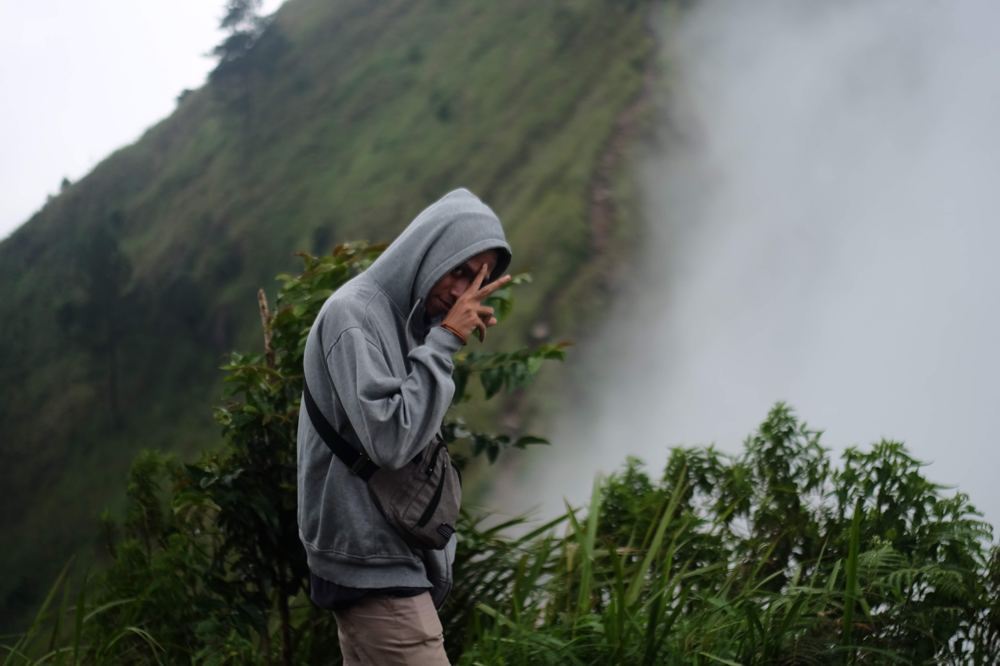

DARY FAJAR AYYASY
Perkenalkan nama saya Dary Fajar Ayyasy, Saya adalah Mahasiswa dari Universitas AMIKOM Yogyakarta dari program studi Teknik Komputer.
website infoku.com menyediakan informasi seputar saya sendiri dan sekitar saya.
Perkenalkan nama saya Dary Fajar Ayyasy, Saya adalah Mahasiswa dari Universitas AMIKOM Yogyakarta dari program studi Teknik Komputer.
saya lahir dilampung, tepatnya di lampung tengah,
Sebagai seorang yang tinggal di Lampung, aku sangat beruntung dapat merasakan kekayaan budaya dan keindahan alam yang luar biasa di provinsi ini. Adat istiadat yang masih dijaga dengan baik oleh masyarakat Lampung menambah warna kehidupan sehari-hari. Aku sering menghadiri acara-acara tradisional seperti upacara adat, perayaan hari besar, dan festival budaya yang memperkuat kebersamaan dan kebanggaan akan identitas Lampung
Tak hanya itu, kelezatan kuliner Lampung juga merupakan daya tarik tersendiri. Aroma harum rempah-rempah bercampur dengan cita rasa yang khas membuat setiap hidangan menjadi tak terlupakan. Aku sering menjelajahi pasar tradisional di Lampung, mencicipi berbagai hidangan lokal seperti pindang, sate pusut, sambal tempoyak, dan masih banyak lagi.
Tentu saja, keindahan alam Lampung juga tak dapat diabaikan. Dari pantai-pantai eksotis di Pesisir Barat hingga pemandangan hijau nan mempesona di Pegunungan Bukit Barisan, setiap sudut Lampung menawarkan pesona alam yang memikat hati. Aku sering menghabiskan waktu di Taman Nasional Way Kambas untuk menikmati keindahan alamnya yang menakjubkan dan melihat keberagaman flora dan fauna yang dilindungi.
Kucing adalah salah satu hewan peliharaan yang paling populer di seluruh dunia, dan cerita tentang mereka selalu mengundang rasa hangat dan keceriaan. Aku memiliki pengalaman yang luar biasa dengan kucing, baik sebagai hewan peliharaan pribadi maupun melalui interaksi dengan kucing-kucing liar di sekitar tempat tinggalku
Kucing-kucing peliharaan adalah bagian tak terpisahkan dari kehidupan sehari-hari di rumahku. Mereka menjadi anggota keluarga yang lucu, manja, dan penuh dengan keceriaan. Setiap hari, aku disambut oleh tingkah laku lucu mereka, mulai dari melompat-lompat di sekitar rumah, bermain dengan mainan mereka, hingga tidur di tempat yang paling nyaman yang bisa mereka temukan. Kucing-kucingku juga memiliki kepribadian yang unik; ada yang suka bermain aktif, ada yang lebih suka bersantai di bawah sinar matahari, dan ada yang selalu ingin mendapatkan perhatian dan kasih sayang
Selain kucing peliharaan, aku juga sering bertemu dengan kucing liar di sekitar lingkungan tempat tinggalku. Meskipun mereka tidak memiliki pemilik yang merawat mereka, kucing-kucing liar ini memiliki kecerdasan dan keuletan yang luar biasa untuk bertahan hidup di lingkungan yang keras. Aku selalu merasa terharu saat melihat bagaimana mereka saling menjaga dan berbagi sumber daya di antara sesama kucing liar